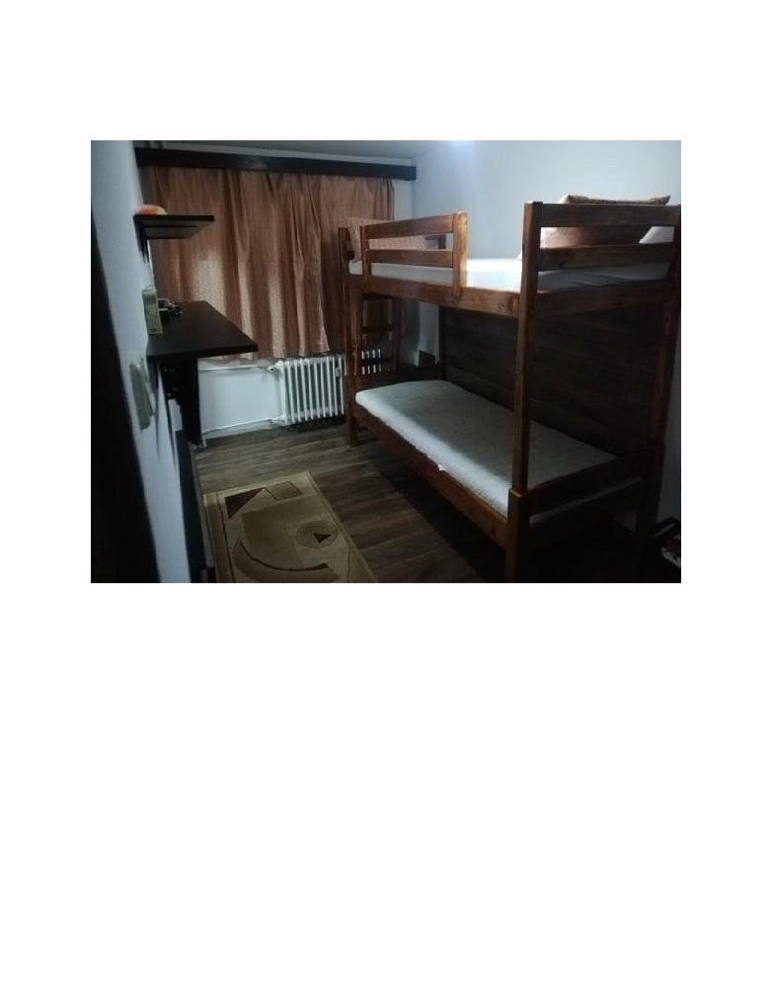

Groaza studentului in căutare de chirii͘
Imaginează-ți că ești adolescent͘ În sfârșit ai terminat liceul și, cu toate că pandemia ți-a
dat peste cap toate planurile, ai reușit să iți iei bacalaureatul cu o notă decentă, iar apoi,
nu în ultimul rând, ai intrat la facultatea mult dorită͘ stfel a sosit și timpul să iei o decizie
în ceea ce constă spațiul în care iți vei petrece mai mult de 12 ore pe zi: chirie sau cămin?
Dacă în momentul în care citești acest articol, pandemia încă își face simțită prezența, vei avea o
a treia opțiune, cursurile desfășurându-se în online, adică să rămâi acasă, în orașul tău natal. Totuși,
timp de 18 sau mai mult ai locuit în orașul acela demodat și știm cu toții că dacă ai avea
posibilitatea, ai pleca oricând. Ei bine, în aceeași situație am fost și eu pus în urmă cu câteva luni.
Auzisem lucruri teribile despre viața de cămin, de la prietenii mei mai mari și am decis, în final,
să îmi caut o chirie modestă pe care totuși să o pot numi “acasă”. După cel puțin 2 luni de navigat
pe Facebook, am ajuns de la cele mai mari grupuri de chirii in Cluj-Napoca, până la grupurile mici
care nici măcar titlul nu îți oferă speranță sau încredere ( „Chirii...ieftine...Cluj” - da, exact așa).
Cu greu, am dat de ceva bun care se încadra in bugetul meu. Totodată am dat de si mai multe
anunțuri care m-au lăsat cu gura căscată.
Astăzi m-am decis să mă reîntorc pe aceste grupuri minunate pentru a rămâne în ton cu piața
imobiliara și în ceea ce urmează va voi prezenta câteva dintre apartamentele/garsonierele care te-
ar face să alegi opțiunea a treia despre care vorbeam mai sus.
“Tiny Home” într-o garsonieră la fel de mică.
Dacă nu sunteți familiarizați cu conceptul de “Tiny Home”, această se referă la o casă mică
construită manual, de obicei mobilă (pe roți), în care încerci, în cel mult 35 de metri pătrați să
îndeși cât mai multe obiecte și utilități obișnuite care țin de un stil de viață normal. Ei bine, în
fotografia de mai sus puteți observă un remix (dus în extrem) al acestui concept.
Este vorba de un apartament cu o cameră la 30 de metri pătrați situat în inima orașului, adică prin
Piața Unirii. Se laudă că e „ideal pentru o persoană sau un cuplu și pentru persoanele care vor să
locuiască într-o zonă centrală, cu acces facil către toate punctele de interes”. De asemenea „se
închiriază complet mobilat și utilat”. Chiria e 300 de euro, dar îți dai singur seamă dacă își merită
banii.
Când am dat peste anunțul ăsta, mi-a luat câteva minute bune să înțeleg exact la ce mă uit. Dacă
până acum nu v-ați dat seama, acea cutie de lemn este atât baia imobilului, cât și patul, indicat de
scară. Din păcate, nu există poze de sus, dar ceva îmi spune că cei cu o vezica mică ar putea (dacă
proprietarul este de treaba) să facă o gaură în patul de sus. De ce? Cu o ținta destul de bună, ai
putea să iți faci treburile direct în WC-ul de sub ține. Din cate putem observă, baia nu are o ușa
normală, ci una rabatabilă. Dacă credeați că mirosul și-ar face drum, proprietarul v-a luat-o înainte
și a găsit soluția perfectă: motiv pentru care a instalat o hotă deasupra unui bufet în imediata
vecinătate.
Trebuie să recunosc, dar sunt impresionat că au reușit să bage o cadă în baia aceea improvizată.
Totuși, oricât de mult am analizat poză, nu am văzut o mașina de spălat, dar cine are nevoie de una
când ai o cadă, o chiuvetă și încă o chiuvetă chiar la ieșirea din baie? În cazul în care speli ciorapii
în cadă, iar unul dintre aceștia își face loc pe scurgere această este dotată în exterior cu o gură de
aerisire prin care cu ușurința poți scoate furtunul pentru a scoate ciorapii pierduți.
În acesta poze putem observa cealaltă parte a camerei. Camera în sine, este foarte mică, deoarece
spătarul scaunului de birou apare și în prima poză, lângă baie. Mai ai și un dulap pentru haine, un
birou care, dacă ai scoate sertarele, iți aduce aminte de băncile de la scoală, un scaun de lemn care
poate fi înlocuit cu celălalt scaun din camera, o centrală și cam atât.
Totuși, apartamentul poate fi modernizat, păstrând, totodată, conceptul de Tiny Home. Daca va
este greu sa va imaginați, un prieten de-al meu a reușit sa realizeze un plan pentru o eventuala
modernizare.
Dacă ești hipster și vrei să locuiești în centru, intră-un apartament care sfidează legile societății,
acesta este apartamentul perfect pentru ține. Mă rog, anunțul a fost șters, re-adăugat și stres, din
nou, între timp. Ori cineva a acceptat oferta, ori proprietarul s-a prins că prețul e exagerat chiar și
pentru Cluj.
Chiriaș de preferință ortodox, nefumător si altele.
În acest anunț, agentul de imobiliare un a dat informații despre locuința cum ar fi, mărimea sau
dotările. Dar a ținut să precizeze preferințele proprietarului: “pentru chiriaș de preferința ortodoxă
nefumătoare. FĂRĂ ANIMALE.” Din descriere am realizat că proprietara probabil este acea baba
pe care o vede toată lumea pe un scaun în față blocului care își face cruce atunci când un băiat cu
părul lung sau o fată cu bluza decoltată, trece pe lângă ea. Mă întreb oare, de ce neapărat
„ortodoxă”? Oare trebuie în fiecare duminică să mergi cu dansa la biserica?
Oricum, în cele două poze care constituie o camera (repet, o camera). Te rog să admiri cum trecutul
se îmbina cu prezentul. În poză din partea stânga, găsim un mobilier care probabil are aceeași
vârsta cu apartamentul. Masă „vintage”, dotată cu un sertar fără mâner, este perfectă pentru a-ți
ascunde drogurile de proprietar (până la urmă a spus doar „nefumător”, nu?). Singurul lucru care
lipsește de pe această sunt milieurile în formă de stea sau renumitul bibeloul de porțelan cu caleașcă
trasă de 2 cai. Scaunele căptușite cu mătase se îmbina perfect cu canapeaua dotată cu o pătura cu
model florar. Televizorul, însuși, este un bonus pentru iubitorii stilului vintage, care vor să se simtă
că într-o capsulă a tipului, deoarece prinde doar 3 canale: TVR1, TVR2 și un canal cu desene
animate precum Lele și Bolea, Mihaela și Azore, Miaunele și Bălănel. Tot pe acest televizor antic,
se află o păpușă cu păr portocaliu, probabil jucăria din copilărie a proprietarului. Totuși, în spatele
canapelei se află o mobilă puțin mai modernă, pentru a-ți da puțin impresia de „modern” sau
„actual”. Pentru aceeași impresie camera este dotată cu parchet laminat, dar fiind prea mult, acesta
riscă să strice stilul vintage din restul camerei. Așa că, o parte din el este acoperit cu un covor.
Bucătăria sau baia sunt inexistente, cel puțin în poze. Deci, dacă ești dispus să mănânci doar
pachetul trimis de părinții tăi în cel mult 2 zile (3-4 zile iarnă, fiind mai rece în casă, nu se strică
atât de repede carnea), iar “treburile” să ți le faci la cel mai apropiat magazin cu o baie decentă,
poate că acesta garsonieră nu este atât de rea pentru ține.

Garsonieră sau cămin?
Daca pana acum apartamentele sau garsonierele de mai sus măcar nu ti-au dat un vibe de cămin,
acest anunț iți va tăia si aceasta bucurie.
Camera care este un living și un dormitor în același timp este dotată cu minunatul pat supraetajat.
Pe partea opusă, niște rafturi pe care poți pune niște poze cu un apartament mai bun decât acesta,
la care te poți uită înainte să adormi. Și atât.
Hai să trecem la bucătărie
Spre deosebire de anunțurile anterioare, această garsonieră are mașina de spălat. Mașina este
dotată și cu un coș de gunoi în caz că trebuie să arunci hainele stricate de această. Pe lângă aragazul
fără cuptor, bucătăria este dotată cu un cuptor cu microunde care se accesează folosind scaunul de
sub masă inovatoare „2 în 1”, o dată masă de călcat, altă dată masă de bucătărie.
Să nu uităm de baia în care dacă pornești dușul, trebui să cureți WC-ul, chiuvetă, faianța și cam
tot. Partea bună e, dacă vrei să faci treaba mică, poți salva niște timp și te poți spală pe mâini,
direct de pe WC. (sau din picioare)
Garsonieră intitulată că fiind “modernă”, “recent renovată total” , dar și “complet mobilată” se
aflat în cartierul Mănăștur, adică la vreo 45 de minute de mers pe jos până în centru. Partea bună
e că-i situat fix între Polus și Platinia Mall, asta dacă ești genul de om care pune preț mare pe
cumpărături. Dar după părerea mea, mai bine pui încă 50 de euro și găsești ceva mult mai modern,
chiar de lux, în Florești.